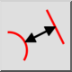
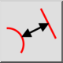
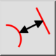
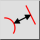

Distancia entidad al entidad
Barra de herramienta / icono:
 

Menú: Información > Distancia entidad al entidad
Acceso directo: I, N
Comandos: infodistee | in
Esta es una traducción automática.
Barra de herramienta / icono:
 

Menú: Información > Distancia entidad al entidad
Acceso directo: I, N
Comandos: infodistee | in
Esta herramienta mide la distancia exacta entre una entidad y un punto dado por el usuario.